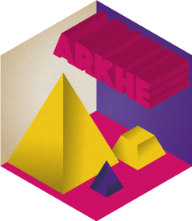

arkhe


Overview
A collection of classes that represent archaeological data. This package provides a set of S4 classes that represent different special types of matrix (absolute/relative frequency, presence/absence data, co-occurrence matrix, etc.) upon which package developers can build subclasses. It also provides a set of generic methods (mutators and coercion mechanisms) and functions (e.g. predicates). In addition, a few classes of general interest (e.g. that represent stratigraphic relationships) are implemented.
Installation
You can install the released version of arkhe from CRAN with:
install.packages("arkhe")And the development version from GitHub with:
# install.packages("remotes")
remotes::install_github("tesselle/arkhe")Usage
arkhe provides a set of S4 classes that represent different special types of matrix.
- Integer matrix:
-
CountMatrixrepresents absolute frequency data, -
OccurrenceMatrixrepresents a co-occurrence matrix,
-
- Numeric matrix:
-
CompositionMatrixrepresents relative frequency (compositional) data,
-
- Logical matrix:
-
IncidenceMatrixrepresents presence/absence data, -
StratigraphicMatrixrepresents stratigraphic relationships.
-
It assumes that you keep your data tidy: each variable (type/taxa) must be saved in its own column and each observation (assemblage/sample) must be saved in its own row.
These new classes are of simple use as they inherit from the base matrix:
## Define a count data matrix
## (data will be rounded to zero decimal places, then coerced with as.integer)
quanti <- CountMatrix(data = sample(0:10, 100, TRUE), nrow = 10, ncol = 10)
## Define a logical matrix
## (data will be coerced with as.logical)
quali <- IncidenceMatrix(data = sample(0:1, 100, TRUE), nrow = 10, ncol = 10)arkhe uses coercing mechanisms (with validation methods) for data type conversions:
## Create a count matrix
X <- matrix(data = sample(0:10, 75, TRUE), nrow = 15, ncol = 5)
## Coerce to absolute frequencies
A1 <- as_count(X)
## Coerce to relative frequencies
B <- as_composition(A1)
## Row sums are internally stored before coercing to a frequency matrix
## (use get_totals() to get these values)
## This allows to restore the source data
A2 <- as_count(B)
all(A1 == A2)
#> [1] TRUE
## Coerce to presence/absence
D <- as_incidence(A1)
## Coerce to a co-occurrence matrix
E <- as_occurrence(A1)The CountMatrix, CompositionMatrix and IncidenceMatrix classes have special slots:
-
samplesfor replicated measurements/observation, -
groupsto group data by site/area. -
tqpandtaqto specify the chronology of an assemblage.
The way chronological information is handled is somewhat opinionated:
- Sub-annual precision is overkill/meaningless in most situations: dates are assumed to be expressed in years CE and are stored as integers (values are coerced with
as.integer()and hence truncated towards zero). - A date range (i.e. TPQ/TAQ) is expected, although it is possible to specify a point estimate.
When coercing a data.frame to a *Matrix object, an attempt is made to automatically assign values to these slots. This behavior can be disabled by setting options(arkhe.autodetect = FALSE).
Y <- as.data.frame(X)
Y$samples <- rep(c("a", "b", "c", "d", "e"), each = 3)
Y$groups <- rep(c("A", "B", "C"), each = 5)
Y$tpq <- sample(1301:1400, 15, TRUE) # TPQ
Y$taq <- sample(1451:1500, 15, TRUE) # TAQ
## Coerce to a count matrix
Z <- as_count(Y)
## Get groups
get_samples(Z)
#> [1] "a" "a" "a" "b" "b" "b" "c" "c" "c" "d" "d" "d" "e" "e" "e"
## Get groups
get_groups(Z)
#> [1] "A" "A" "A" "A" "A" "B" "B" "B" "B" "B" "C" "C" "C" "C" "C"
## Get dates
get_dates(Z)
#> tpq taq
#> 1 1347 1455
#> 2 1360 1490
#> 3 1387 1453
#> 4 1315 1463
#> 5 1388 1482
#> 6 1392 1476
#> 7 1379 1471
#> 8 1344 1464
#> 9 1347 1454
#> 10 1333 1490
#> 11 1387 1473
#> 12 1318 1463
#> 13 1382 1462
#> 14 1364 1461
#> 15 1303 1491Contributing
Please note that the arkhe project is released with a Contributor Code of Conduct. By contributing to this project, you agree to abide by its terms.
Links
- Download from CRAN at
https://cloud.r-project.org/package=arkhe - Browse source code at
https://github.com/tesselle/arkhe/ - Report a bug at
https://github.com/tesselle/arkhe/issues
License
- Full license
- GPL (>= 3)
Community
Citation
Developers
- Nicolas Frerebeau
Author, maintainer - More on authors...